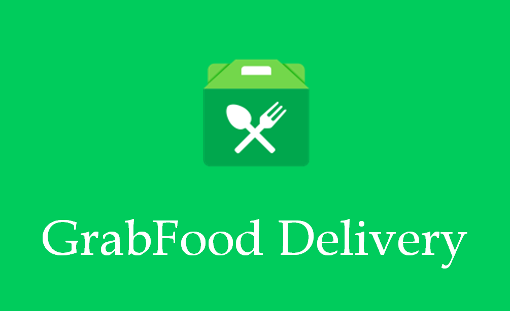
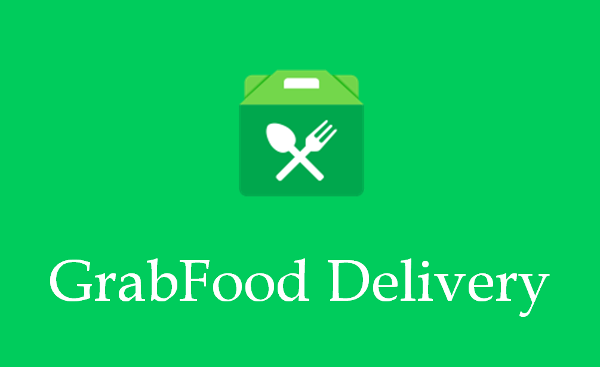

We would love to hear from you! Whether you have feedback on your recent experience at our restaurant, would like to make a reservation for an upcoming occasion, or would like to arrange for delivery through GrabPH, please feel free to reach out to us. Our team will get back to you as soon as possible to address any questions or concerns you may have. We value your patronage and appreciate your feedback, as we are always looking for ways to improve our service and offerings. Thank you for considering us for your next dining experience, and we look forward to hearing from you soon!
 
